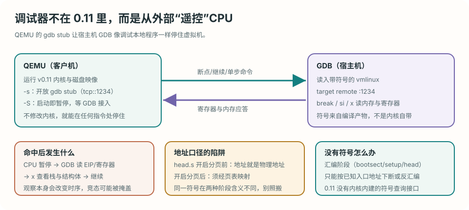
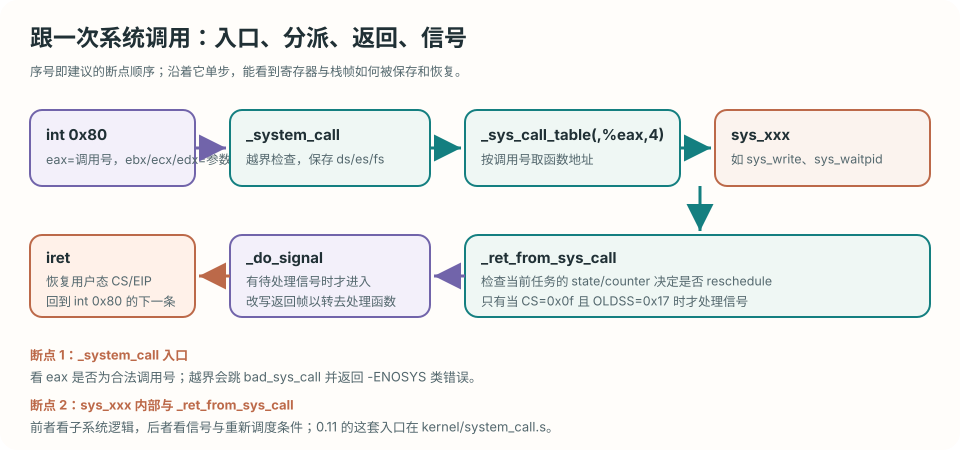

GDB 单步跟踪：远程调试一次系统调用
内核态没有进程可 attach，也没有标准调试接口。这一章说清外部调试器如何接管 CPU，以及沿着 kernel/system_call.s 下断点时，寄存器与栈帧会告诉你什么。
调试 · QEMU gdb stub / system_call.s为什么内核不能像程序那样本地调试？
用户程序可以 gdb ./a.out 直接挂上去，因为操作系统已经在下面撑着它。内核不能：它就是那个“支撑层”，一旦停下来，没有别的进程能去观察它。0.11 也没有内建 kgdb。于是唯一的办法是让虚拟机自己暂停，再由宿主机上的调试器接管——这就是远程调试。
QEMU 的 gdb stub 与 GDB 如何握手
QEMU 在启动参数里加上 -s 会打开一个 gdb stub（默认监听 TCP 1234），加上 -S 则启动后就暂停、等调试器接入。宿主机 GDB 用 target remote 连上它，再载入带符号的内核链接产物（而不是裸的引导镜像），就能按符号名下断点。具体镜像路径与设备参数取决于你的构建与磁盘准备，应以本地环境为准。
# 客户机：开放 gdb stub 并启动即暂停
qemu-system-i386 -m 16 -s -S <你的镜像与磁盘参数>
# 宿主机：连接并载入符号
$ gdb
(gdb) target remote :1234
(gdb) symbol-file <带符号的链接产物>
(gdb) break _system_call
(gdb) continueGDB 看到的是正在执行的 CPU 状态，而不是某个进程的视角。命中一个断点后，CPU 全体暂停，你可以读 EIP、各个通用寄存器、以及任意内存地址；继续时再放行。因为内核与用户程序共用这颗 CPU，暂停点可能正好落在中断处理或调度开关上，这一点在阅读寄存器时要记在心里。

战略断点：从哪里下、能看到什么
断点不是越多越好。调试内核时优先选会跨过边界的位置：特权级切换、页表切换、任务切换。引导阶段（bootsect.s/setup.s/head.s）的行号意义有限，因为这里几乎都是汇编，常用已知入口地址下断——例如引导扇区入口 0x7C00。而在 head.s 执行 CR0.PG 开启分页前，GDB 看到的就是物理地址；开启之后，同一个地址要先经页表才能落到物理页。把两个阶段的地址口径混用，是远程调试最常见的误导来源。
跟踪一次系统调用的往返
系统调用是入口与出口都很清楚的一条路径，适合作为练习。kernel/system_call.s 的 _system_call 先用 eax 做调用号越界检查，再保存段寄存器和参数寄存器，换成内核段后查表分派：
_system_call:
cmpl $nr_system_calls-1,%eax
ja bad_sys_call
push %ds
push %es
push %fs
pushl %edx
pushl %ecx
pushl %ebx
movl $0x10,%edx
mov %dx,%ds
mov %dx,%es
movl $0x17,%edx
mov %dx,%fs
call _sys_call_table(,%eax,4)
pushl %eax
...返回值被压栈后，代码检查 current 的 state 与 counter 决定是否重新调度；直到 _ret_from_sys_call，它才在确认返回的是用户态（CS=0x0f、OLDSS=0x17）后，取出 signal & ~blocked，有待处理信号就调用 _do_signal，最后 iret 回到用户态。这解释了一句常被忽略的事实：信号是在系统调用返回用户态之前才被处理的。

_system_call → sys_xxx → _ret_from_sys_call。在入口看 eax 与三个参数寄存器，在返回处看信号位图与调度条件。为什么在 _system_call 入口就能看出调用号是否合法？（展开核对）
因为用户把调用号放在 eax 里。入口第一条 cmpl $nr_system_calls-1,%eax; ja bad_sys_call 就是边界检查，越界会走错误分支而不是访存 sys_call_table。在断点处读 eax 即可判断这次调用是否落在合法范围。
只读验证与正确边界
不启动调试器也能先确认路径上的符号与分派存在：
grep -n '_system_call:\|bad_sys_call\|_sys_call_table\|_ret_from_sys_call' kernel/system_call.s
grep -n 'do_signal\|signal(%eax)\|CS(%esp)' kernel/system_call.s
grep -n '_sys_call_table' include/linux/sys.h预期找到入口标签、越界分支、表分派语句与返回处的信号检查。这是源码静态实验：本章未启动 QEMU、未接入 GDB、也未产出任何真实断点日志。实际命令参数、断点地址与符号可用性都由你的构建与工具版本决定；涉及准确地址时，请以本地 System.map 类链接信息为准，而不是本文的示意。
原始资料与下一章
- kernel/system_call.s：_system_call、bad_sys_call、ret_from_sys_call、do_signal 调用。
- include/linux/sys.h：_sys_call_table 与调用号宏。
- kernel/sched.c：schedule 与重新调度条件（state/counter）。
- boot/head.s：分页开关处的地址口径分界。
会看还不够，还要会改。下一章亲手往系统调用表里加一项，把“读懂入口”变成“动得了入口”。